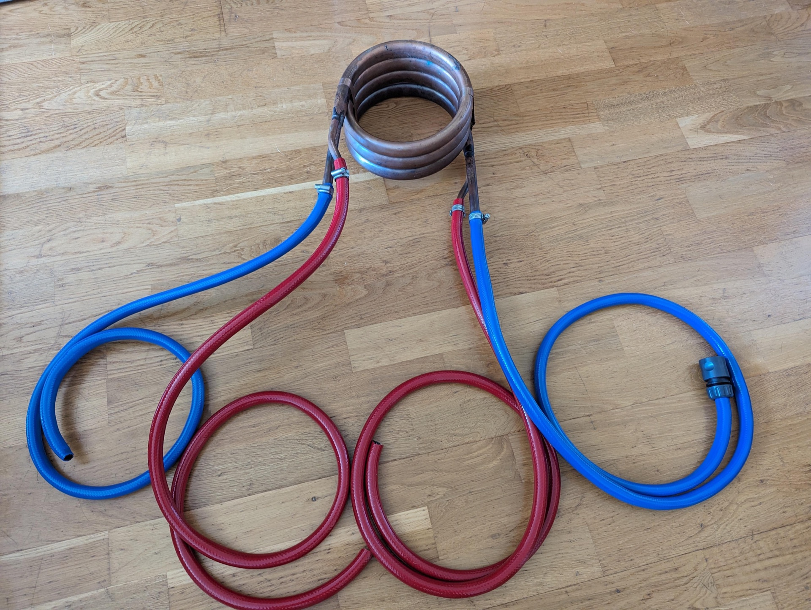
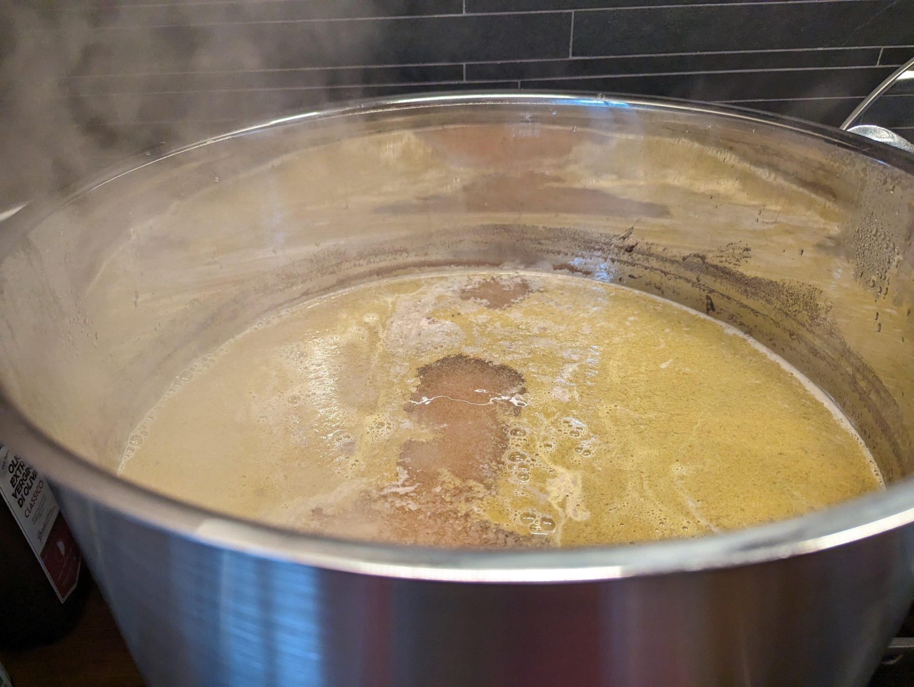
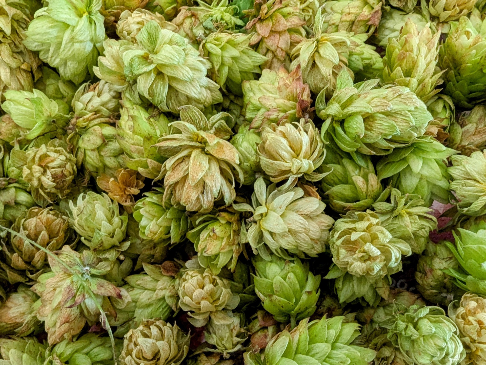
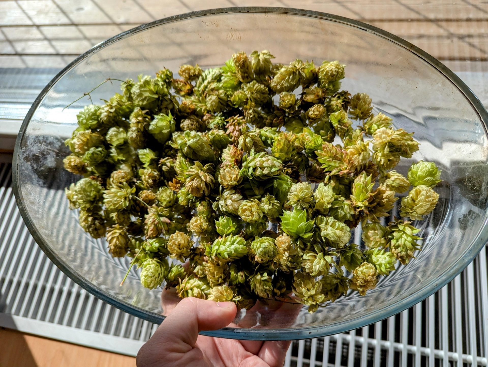
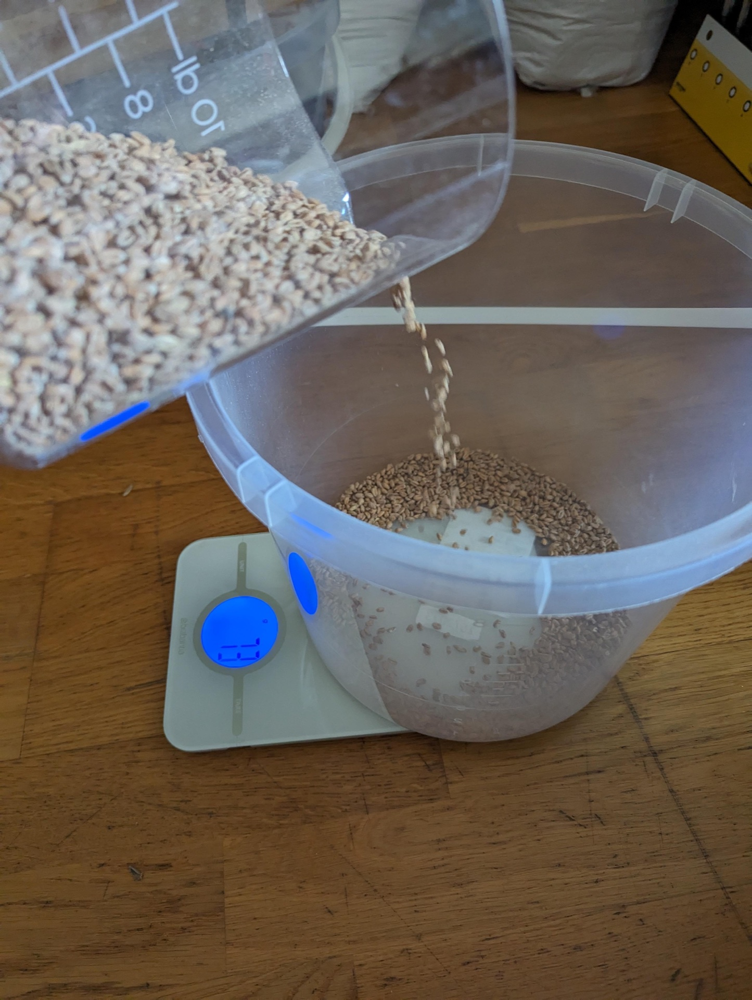
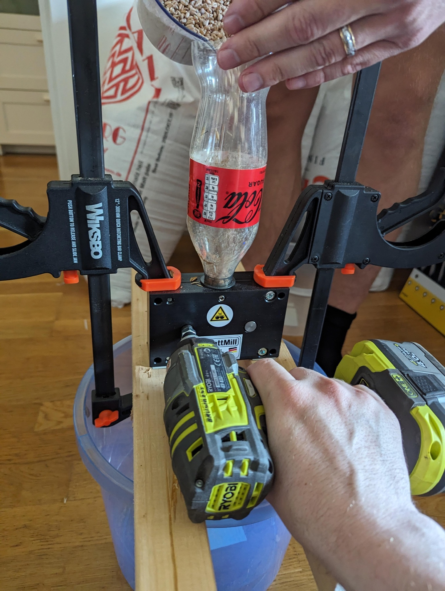
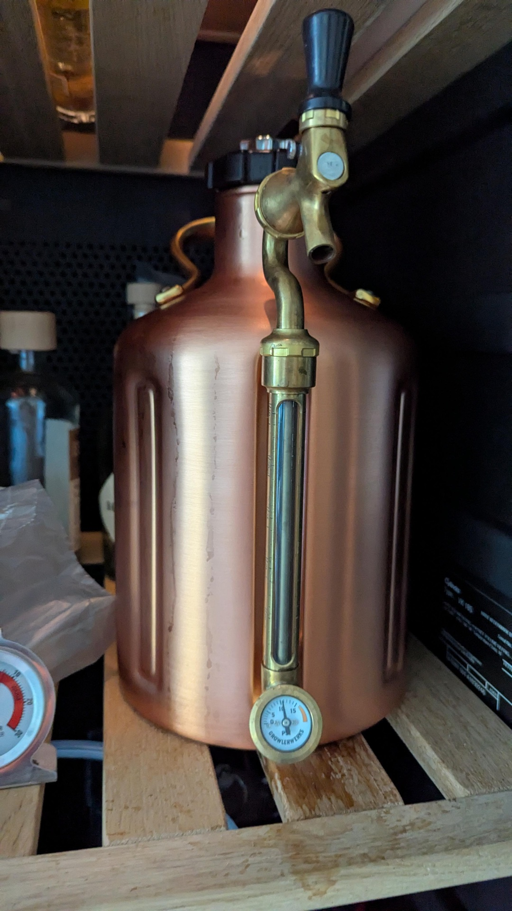
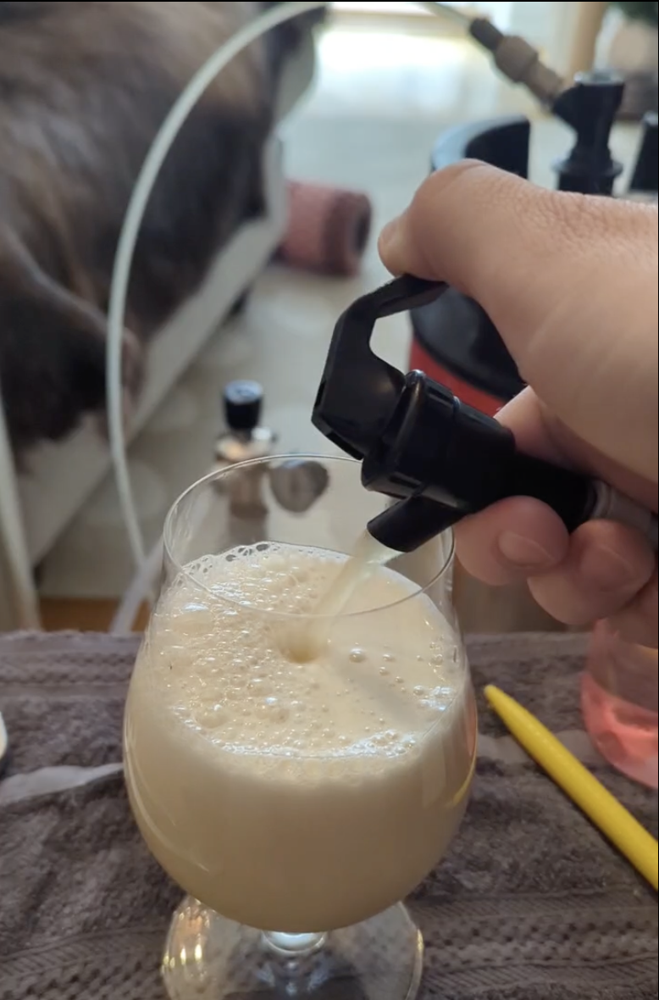

The Complete Homebrewing Guide
From Grain to Glass

Your journey to brewing exceptional beer at home starts here!
Why Homebrew?
Benefits of Homebrewing
- Creative Control: Design your own recipes and experiment with flavors
- Cost Effective: After initial investment, beer costs €0.50-€1.00 per bottle
- Quality: Fresh beer without preservatives or pasteurization
- Community: Join a passionate community of brewers
- Satisfaction: Nothing beats sharing beer you made yourself

A homemade New England Pale Ale
Getting Started: What You'll Need
20-30L capacity (pressure capable recommended)
Digital preferred
Measure alcohol content
Speed up cooling
Sanitization: The Foundation of Good Beer
Cleaning vs Sanitizing
Remove all visible dirt and residue with cleaner like PBW
Kill remaining microorganisms with no-rinse sanitizer
Recommended Products
- PBW (Powdered Brewery Wash): Alkaline cleaner, removes organic deposits
- StarSan: No-rinse acid sanitizer, 1-2 minutes contact time
- Iodophor: No-rinse iodine sanitizer, alternative to StarSan
PBW - The brewer's best friend for cleaning
- Always wear gloves when handling cleaners
- PBW is alkaline - avoid skin/eye contact
- Work in well-ventilated area
- Follow manufacturer's dilution rates
Sanitization Checklist
| Equipment | When to Sanitize | Method |
|---|---|---|
| Fermenter & Lid | Before filling | Fill with sanitizer solution, shake, drain |
| Airlock | Before use | Soak in sanitizer |
| Siphon/Tubing | Before each transfer | Run sanitizer through |
| Bottles/Kegs | Before filling | Rinse with sanitizer |
| Stirring Spoon | Before use post-boil | Dip in sanitizer |
- Save sanitizer solution in a spray bottle after mixing
- Spray ALL surfaces before opening fermenters or kegs
- Spray keg posts, connectors, and lids before use
- Always wear gloves when handling sanitized equipment
- This prevents bacteria contamination - a common beginner mistake!
Understanding Brewing Terms
Gravity & Alcohol
- Sugar density before fermentation
- Example: 1.050 = 50 gravity points
- Higher OG = more potential alcohol
- Typical range: 1.035-1.120
- Sugar density after fermentation
- Example: 1.010 = 10 gravity points
- Lower FG = drier beer
- Typical range: 1.005-1.025
- Percentage of alcohol in beer
- Formula: (OG - FG) × 131.25
- Example: (1.050 - 1.010) × 131.25 = 5.25%
- Typical range: 3-12%
Bitterness & Color
- Measured hop bitterness
- 5-20: Low (Wheat beers)
- 20-40: Moderate (Lagers, Pale Ales)
- 40-80: High (IPAs)
- 80+: Very High (Double IPAs)
- Beer color measurement
- 2-4: Pale straw (Pilsner)
- 5-10: Gold (Pale Ale)
- 10-20: Amber (Brown Ale)
- 20-40: Dark brown (Porter)
- 40+: Black (Stout)
- Balance between bitterness and sweetness
- Formula: IBU ÷ (OG points)
- Example: 40 IBU ÷ 50 points = 0.8
- 0.3-0.5: Malty/Sweet
- 0.5-0.7: Balanced
- 0.7-1.0: Hoppy/Bitter
Quick Reference Examples
| Beer Style | OG | FG | ABV | IBU | SRM | BU:GU |
|---|---|---|---|---|---|---|
| Light Lager | 1.040 | 1.008 | 4.2% | 12 | 3 | 0.3 |
| Pale Ale | 1.050 | 1.012 | 5.0% | 35 | 8 | 0.7 |
| IPA | 1.065 | 1.015 | 6.6% | 60 | 10 | 0.92 |
| Stout | 1.055 | 1.018 | 4.9% | 30 | 35 | 0.55 |
Recommended Kegging Equipment
My Recommended Keg Setup
| Item | Cost | Purpose |
|---|---|---|
| Pressure Fermenter | €100-200 | Ferment under pressure (recommended) |
| Spunding Valve | €20-40 | Control fermentation pressure |
| Brew Kettle (20+ L) | €40-100 | Boiling wort |
| Digital Thermometer | €10-20 | Temperature control |
| Hydrometer | €10-15 | Measure gravity |
| Auto-siphon | €10-15 | Transfer beer |
| Kegging System | €200-400 | Skip bottling entirely |
FermZilla - Perfect for pressure fermentation
Why Pressure Fermentation?
- Temperature Flexibility: Ferment ales at up to 25°C without off-flavors
- Faster Turnaround: Beer ready in 10-14 days vs 3-4 weeks
- Natural Carbonation: No priming sugar needed
- Reduced Oxidation: Closed transfers preserve hop aroma
- Suppress Esters: Cleaner flavor profile, more forgiving
The Brewing Process: Overview
Mashing, Boiling, Cooling, Pitching Yeast
Yeast converts sugars at 10-15 PSI
Drop to 2°C to clear beer
Closed transfer under pressure
Your beer is ready to drink
The Four Main Ingredients
Provides fermentable sugars, color, and flavor
Adds bitterness, flavor, and aroma
Converts sugars into alcohol and CO2
Makes up 90-95% of your beer
Mash Temperature: The Key to Beer Character
The Critical Enzymes
| Enzyme | Optimal °C | Function |
|---|---|---|
| Phytase | 35-52°C | Lowers mash pH |
| Protease | 45-55°C | Breaks down proteins |
| Beta-Glucanase | 45-50°C | Reduces viscosity |
| Beta-Amylase | 60-65°C | Makes fermentable sugars (maltose) |
| Alpha-Amylase | 68-72°C | Makes unfermentable sugars (dextrins) |
What Happens Outside the Range?
- Poor starch conversion
- Cloudy beer (unconverted starch)
- Low efficiency
- Weak body
- Enzyme denaturation
- Tannin extraction
- Astringent flavors
- Stuck fermentation
Precise temperature control is crucial
Target Temperatures by Style
| Temperature | Beta:Alpha | Result |
|---|---|---|
| 62-63°C | High Beta | 90% fermentable, bone dry |
| 64-65°C | Beta favored | 80% fermentable, crisp |
| 66-67°C | Balanced | 70% fermentable, medium body |
| 68-69°C | Alpha favored | 60% fermentable, full body |
| 70-72°C | High Alpha | 50% fermentable, sweet/heavy |
Enzyme Behavior in Detail
- Optimal: 62-65°C - Produces maltose (fermentable sugar)
- Below 60°C: Works slowly, poor efficiency, may take 2+ hours
- Above 65°C: Rapidly denatures, less fermentable wort, sweeter beer
- Death: 70°C - Complete denaturation in minutes
- Optimal: 68-72°C - Creates dextrins (unfermentable sugars) for body
- Below 65°C: Limited activity, thin beer
- Above 75°C: Begins to denature, but more stable than beta
- Death: 80°C - Complete denaturation
Temperature Control Methods
Why Temperature Control Matters
Precise temperature control during mashing is critical for:
- Consistent enzyme activity
- Predictable fermentability
- Reproducible results
- Style-appropriate body and sweetness
Control Methods Compared
| Method | Cost | Accuracy |
|---|---|---|
| Cooler Mash Tun | €30-50 | ±2°C |
| Electric BIAB | €200-400 | ±1°C |
| Sous Vide | €50-100 | ±0.1°C |
| HERMS/RIMS | €500+ | ±0.5°C |
Sous vide provides laboratory-grade temperature control
- No stirring required
- Perfect for small batches
- Multi-step mashes easy
- Use existing kitchen equipment
Temperature Control Options
- Pros: Cheap, simple, no power
- Cons: Temperature drops over time
- Best for: Single infusion mashes
- Tip: Pre-heat with boiling water
- Pros: Precise, affordable, versatile
- Cons: Limited batch size
- Best for: BIAB, small batches
- Tip: Use brew bag to contain grain
- Pros: All-in-one, programmable
- Cons: Expensive initial cost
- Best for: Serious brewers
- Tip: Consider used equipment
Step 1: Mashing & Sparging
The Mashing Process
Mashing converts starches in grain into fermentable sugars.
Heat water to 10-15°C above target mash temp (usually 74-78°C)
Slowly add crushed grain while stirring to avoid clumps
Hold at your recipe's mash temp for 60 minutes
Rinse grains with 77°C water to extract remaining sugars
Sous vide circulator for perfect temperature control
A DIY cooler mash tun - simple but effective
Mashing Tips & Tricks
Step 2: The Boil
Bringing wort to a boil
Late hop additions for flavor and aroma
Why We Boil
- Sterilize the wort
- Extract hop bitterness
- Drive off DMS (cooked corn flavor)
- Concentrate the wort
- Create hot break (protein coagulation)
Hop times = MINUTES REMAINING in the boil, NOT minutes elapsed!
• "60 min" = Add at START of 60-minute boil
• "15 min" = Add with 15 minutes LEFT (after 45 min of boiling)
• "5 min" = Add with 5 minutes LEFT (after 55 min of boiling)
• "0 min" = Add at flameout (heat OFF)
Getting this wrong ruins your beer's flavor balance!
Hop Addition Schedule
| Recipe Says | When to Add | Purpose | Effect |
|---|---|---|---|
| 60 min | Start of boil | Bittering | Clean bitterness, no flavor |
| 20-30 min | 30-40 min into boil | Flavor | Hop flavor, some bitterness |
| 5-10 min | 50-55 min into boil | Aroma | Hop aroma, little bitterness |
| 0 min | Heat off | Aroma | Maximum aroma preservation |
| Dry Hop | During fermentation | Aroma | Intense hop aroma, no bitterness |
Critical Boil Tips
Working with Fresh Ingredients
Fresh Hops
Fresh hops straight from the vine
Hop Drying & Storage
Air-drying fresh hops
- Spread in single layer on screens
- Dry in warm (not hot) area with good airflow
- Takes 2-3 days until papery and springs back
- Store vacuum sealed in freezer
Measuring and Using Hops
Precise hop measurements matter
Hop Storage Tips:
- Keep hops frozen in airtight bags
- Minimize air exposure (vacuum seal if possible)
- Use within 1 year for best quality
- Old hops lose alpha acids and develop cheesy flavors
Grain Preparation
Measuring Grain
Accurate grain measurements ensure consistency
Crushing Grain
Proper crush exposes starch without shredding husks
- Gap: 0.9-1.1mm for most systems
- Husks cracked but not shredded
- White starchy interior exposed
- Minimal flour production
Common Grain Types
| Grain | Purpose | Max % | Notes |
|---|---|---|---|
| 2-Row Pale | Base malt | 100% | Clean, light flavor |
| Munich | Malty flavor | 50% | Bread, toast notes |
| Crystal/Caramel | Sweetness, body | 15% | Caramel flavors |
| Roasted Barley | Color, roast | 10% | Coffee, chocolate |
| Wheat | Head, haze | 60% | Smooth mouthfeel |
Step 3: Pressure Fermentation
Why Pressure Ferment?
- Ferment lagers at ale temps (18-22°C)
- Suppress unwanted esters
- Natural carbonation during fermentation
- Faster grain to glass (10-14 days)
- No temperature control needed
- Closed transfers = no oxidation
- Days 1-2: Ferment at 0 PSI (let CO2 escape)
- Day 3: Set spunding valve to 10-15 PSI
- Day 7-10: Fermentation complete
- Day 10-12: Cold crash to 2°C
Spunding valve controlling fermentation pressure
Pressure Fermentation Tips
Yeast Selection for Pressure Fermentation
| Style | Yeast Strain | Pressure | Temperature |
|---|---|---|---|
| Clean Ales | US-05, M44 | 10-15 PSI | 20-24°C |
| Pseudo-Lagers | W-34/70, M54 | 15-20 PSI | 18-22°C |
| English Ales | S-04, M42 | 5-10 PSI | 18-22°C |
| NEIPA | London Fog, A38 | 5-8 PSI | 18-20°C |
Step 4: Kegging from Pressure Fermenter
Closed Transfer Process
- Sanitize keg thoroughly
- Purge with CO2 (fill and push out sanitizer)
- Leave ~2 PSI in keg
- Connect gas post to gas post
- Connect liquid to liquid
- Fermenter pressure pushes beer
- No pumps or siphons needed
- Gravity + pressure does the work
- Zero oxygen exposure
Professional kegging setup
Even small kegs work great
Serving Pressure by Style
| Style | CO2 Volumes | PSI @ 4°C |
|---|---|---|
| British Ales | 1.5-2.2 | 4-8 |
| American Ales | 2.2-2.7 | 8-12 |
| Lagers | 2.4-2.8 | 10-13 |
| Wheat Beers | 2.8-3.5 | 13-18 |
Serving Your Beer
Draft System Basics
Proper pressure ensures perfect pours
- 4mm ID: 2-3 PSI drop per 30cm
- 6mm ID: 0.5-1 PSI drop per 30cm
- Aim for 30-60mL/second pour rate
- Adjust line length for foam control
Perfect Pour Tips
- Keep beer at 3-4°C for serving
- Open tap fully and quickly
- Hold glass at 45° angle initially
- Straighten glass as it fills
- 2-3cm foam head is ideal
Common Serving Issues
| Problem | Likely Cause | Solution |
|---|---|---|
| All foam | Too warm/high pressure | Check temp, reduce PSI |
| Flat beer | Low pressure/leak | Check for leaks, increase PSI |
| Off flavors | Dirty lines | Clean lines every 2 weeks |
Recipe Development & Software
Recipe Formulation Basics
Start with BJCP guidelines for targets (OG, FG, IBU, SRM)
80-95% base malt, 5-20% specialty malts
Balance IBUs with OG (BU:GU ratio 0.5-1.0 typical)
Match yeast character to style goals
Match water profile to style (optional for beginners)
Brewfather app for recipe design
Popular Brewing Software
- Brewfather: Cloud-based, great mobile app, thousands of recipes
- BeerSmith: Desktop powerhouse, extensive recipe database
- Brewer's Friend: Web-based, good for beginners
- BrewTarget: Free, open-source option
Key Recipe Calculations
| Calculation | Formula | Purpose |
|---|---|---|
| OG Estimate | (PPG × kg × Efficiency) / liters | Predict starting gravity |
| IBU (Tinseth) | Complex - use software | Bitterness calculation |
| ABV | (OG - FG) × 131.25 | Alcohol content |
| BU:GU Ratio | IBU / (OG - 1) × 1000 | Balance assessment |
Troubleshooting Common Problems
Off-Flavors Guide
| Flavor | Description | Cause | Prevention |
|---|---|---|---|
| Acetaldehyde | Green apple, latex paint | Incomplete fermentation | Allow full fermentation, healthy yeast |
| Diacetyl | Butter, butterscotch | Yeast stress, too-cold fermentation | Diacetyl rest at 20°C, proper temps |
| DMS | Cooked corn, cabbage | Covered boil, slow cooling | Vigorous uncovered boil, quick chill |
| Phenolic | Band-aid, medicinal | Wild yeast, chlorine | Sanitation, remove chlorine |
| Astringent | Tea-like, mouth-puckering | Over-sparging, high pH | Stop sparge at 1.010, check pH |
| Oxidation | Cardboard, sherry | Oxygen exposure post-fermentation | Minimize splashing, purge with CO2 |
Common Process Issues
- Check temperature (too cold?)
- Rouse yeast gently
- Add yeast nutrient
- Pitch fresh yeast if needed
- Grain bed too compact
- Add rice hulls (5-10%)
- Underlet with hot water
- Stir and resettle bed
- Pellicle (white film) on beer
- Rope-like strands
- Sour/funky flavors
- Over-attenuation
- Check grain crush
- Verify mash pH (5.2-5.6)
- Ensure proper temps
- Sparge slowly (45-60 min)
Advanced Techniques & Tips
Water Chemistry Basics
Important Ions
| Ion | Effect | Target (ppm) |
|---|---|---|
| Calcium | Yeast health, clarity | 50-150 |
| Sulfate | Hop bitterness | 50-350 |
| Chloride | Malt fullness | 50-150 |
| Bicarbonate | pH buffer | 0-250 |
Style Water Profiles
- IPAs: High sulfate (200-350 ppm), sulfate:chloride 3:1
- NEIPAs: Balanced or chloride-forward, 1:1 to 1:2 ratio
- Stouts: Higher bicarbonate (100-200 ppm) for dark malts
- Pilsners: Very soft water, minimal minerals
- Measure 5-10 min into mash
- Use lactic acid to lower
- Use baking soda to raise
- Adjust in small increments
Yeast Management
Yeast Starters
- Liquid yeast over 2 months old
- High gravity beers (>1.060)
- Lagers (need 2x cells)
- To harvest yeast for reuse
Temperature Control Methods
- Pressure Fermentation: No temp control needed!
- Swamp Cooler: Fermenter in water bath
- Fermentation Chamber: Modified fridge
- Glycol System: Professional precision
Resources & Next Steps
Online Communities
- r/Homebrewing: Active Reddit community
- HomeBrewTalk: Largest forum, great recipes
- The Brewing Network: Podcasts and forums
- Milk The Funk: Wild/sour brewing
Essential Books
- How to Brew (Palmer): The homebrewing bible
- Designing Great Beers (Daniels): Recipe formulation
- Yeast (White & Zainasheff): Fermentation science
- Water (Palmer & Kaminski): Water chemistry
YouTube Channels
- Clawhammer Supply
- The Homebrew Challenge
- David Heath Homebrew
- Short Circuited Brewers
AI assistants can help with recipe formulation!
Local Resources
- Homebrew Shops: Knowledge + fresh ingredients
- Homebrew Clubs: Learn from experienced brewers
- Competitions: Get feedback from certified judges
- Local Breweries: Many brewers started as homebrewers
Ready to Start Brewing?
Remember: Relax, Don't Worry, Have a Homebrew!
The best beer is the one you brew yourself. Start simple, keep good notes, and enjoy the journey.
"Brewing beer is a blend of art and science - embrace both!"